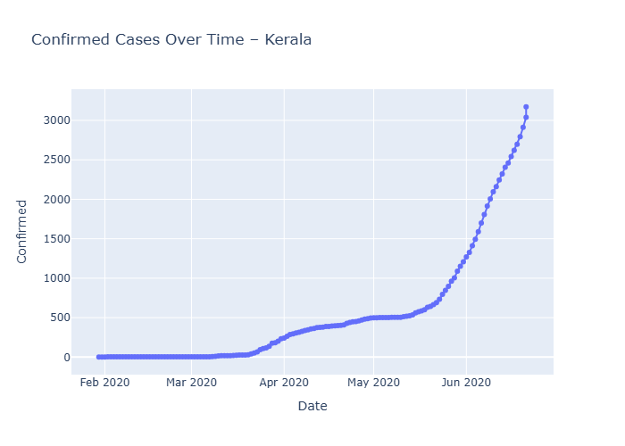
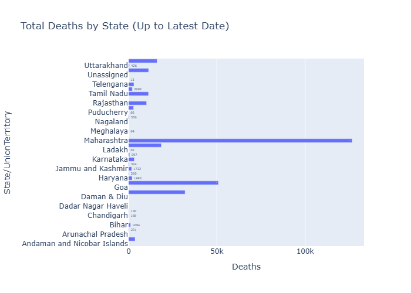

This dashboard presents the exploratory data analysis performed in Python on the
COVID-19 India dataset. All visualizations are exported as PNG images.
Confirmed Cases Over Time

Cured vs Confirmed
Total Deaths by State

Key Insights
Kerala showed earliest outbreak and fastest increase in confirmed cases.
Recoveries lag behind confirmed cases by several days.
Deaths remained extremely low in the early dataset.
Date filtering and state-level comparisons reveal early-spread patterns.